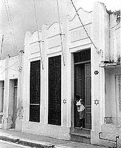
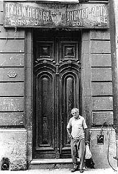
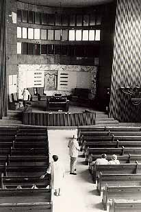

Jewish Heritage
Report
Vol. I, Nos. 3-4 / Winter 1997-98
Cuban Architecture
Tropical Remnants: The Architectural Legacy
of Cuba's Jews
by Paul Margolis
Exterior
of Temple Beit Hatikvah, Santiago de Cuba. For many years, this
synagogue was used as a cultural center by the city. In 1995,
it was returned to the Jewish community and re-dedicated. Photo:
Paul Margolis.
Cuba was home to a viable Jewish community for only
a brief period of time in the 20th century. In the late 1950s,
before Fidel Castro came to power, some 15,000 Jews lived in Cuba.
Most of them had settled in Cuba during the first decades of the
century; many had become comfortably middle-class, some quite
prosperous. All of that changed after 1959, when Cuba became a
Communist country. Over 90% of the Jews fled, mostly going to
the U.S. By the early 1990s, the Jewish population of Cuba was
estimated at 1,000 to 1,200.
Cuba's Jews are primarily Eastern European Ashkenazi, with Sephardic
Jews from Turkey making up the balance of the community. The first
Jews in Cuba in this century came to do business after the United
States defeated Spain in the Spanish-American War of 1898, and
Cuba became a sort of U.S. protectorate. The Eastern European
Jews tended to use Cuba as a way station into the U.S. in the
1920s, when restrictive laws made immigration into this country
more difficult. It was possible to go to Cuba, wait six months
to get a Cuban passport, then go directly to the U.S. Some Jews
stayed in Cuba, others were stranded there by even more stringent
immigration restrictions, or by the outbreak of the Second World
War after which few thousand Holocaust survivors settled in Cuba.
The Sephardic Jews came mostly from Turkey after 1918, during
the political upheaval that followed Turkey's defeat in the First
World War. The Jews who remained in Cuba after the Castro-led
Revolution tended to be assimilated, intermarried and supporters
of the government. A high percentage were professionals who enjoyed
status and comfortable lives. In 1991, in the wake of the near-collapse
of the Cuban economy, the government allowed more freedom of religious
observance. Jews began attending synagogues and learning about
Judaism for a variety of reasons. Some did it out of a genuine
spiritual hunger, others because of the need to be with one's
own group in difficult times, and still others from opportunistic
motives.
I traveled to Cuba twice in 1994, and again in 1996, to document
the rebirth of Judaism on the island. While my primary interest
was photographing and interviewing the Jews to report on their
lives, I also visited Jewish sites in all of the major cities
of Cuba. Havana, which is home to the majority of Cuba's Jews,
has three synagogues in varying states of use, two cemeteries,
and a kosher butcher shop. Like nearly all of Cuba's buildings,
except for those spruced up for the tourist trade, the Jewish
sites suffer from nearly 40 years of a lack of maintenance. Havana
also boasts one of the stranger Jewish monuments in existence
anywhere: a memorial to Ethel and Julius Rosenberg, the American
Jewish couple who were executed for attempting to pass atom bomb
secrets to the Soviet Union.
The Patronato Synagogue, in the Vedado section, was built in the
mid-1950s by Havana's newly affluent Jews. It is hardly architecturally
inspiring: the building resembles a shoe box with a McDonald's-like
arch in front. The Patronato is both the cultural and religious
center for Havana's Jews. The Jewish Joint Distribution Committee
maintains an office in the building, there is a library, and classes
and social activities are held here. The Patronato is the synagogue
to which groups of Jews visiting from overseas are usually taken
for Friday night services. Recently the Patronato affiliated with
the Conservative movement in the U.S.
Temple Adath Israel in Old Havana is a more modest structure,
also dating from the 1950s. A simple concrete building, almost
unnoticeable from the crowded, narrow street, it is Havana's Orthodox
shul. During the years when religious observance was discouraged,
small groups of mostly elderly people attended services here.
In late 1994, the first Orthodox bar mitzvah in 30 years was held
there.
Havana's earliest synagogue, Chevit Achim in Old Havana, dates
from 1914. It is located in what was once a meeting hall and is
hardly ever used. A Reform congregation meets sporadically in
what was once a Sephardic cultural center in the newer part of
the city.
There are two Jewish cemeteries, an Ashkenazic and a Sephardic
located in Guanabacoa, a town outside of Havana. Both are reasonably
well maintained these days, with a caretaker who sees to their
upkeep.
Temple
Chevet Achim, in Old Havana, was founded in 1914 and is Cuba's
oldest synagogue. Daniel Esquenazi, shown standing in front of
the seldom-used synagogue, is both shammes and president of the
congregation. Photo: Paul Margolis.
Small pockets of Jews live outside of Havana, in the
cities of Santiago, Camaguey and Cienfuegos. In Santiago, at the
far end of the island, the community of about 100 Jews got its
synagogue back in 1995, after a 25-year period during which the
building had been used as a youth center. The shul was re-dedicated
in July of 1995, and regular Friday night services are held there.
A small cemetery with graves dating back to the 1920s is located
about a half-hour drive from Santiago.
In Camaguey, a dusty city in the center of the island, the synagogue
was taken over by the government and turned into apartments and
a clinic in the 1960s. The community of 75 or so Jews is still
waiting to either receive another building from the municipality
or to be able to buy their old synagogue from the municipality.
The Camaguey Jewish cemetery has been refurbished, cleaned and
maintained over the past several years with funds made available
by the government and from overseas Jewish agencies.
Cienfuegos is a port city some 200 miles south of Havana with
a tiny Jewish community. When I first visited in 1994, there were
35 Jews. However, I have since heard that half the community emigrated
to Israel. The few remaining Jews meet in each other's homes for
holidays, or go to Havana.
Interior
of the Patronato Synagogue, Havana. The Patronato was once Havana's
upscale shul, built by newly affluent Cuban Jews in the early
1950s. Today the synagogue is affiliated with the Conservative
movement in the U.S. and serves as the focal point for most Jewish
activities in Havana. Photo: Paul Margolis.
Near Cienfuegos, in Santa Clara, there is a Jewish
cemetery, but few or no Jews live in the nearby city. The Santa
Clara cemetery was at one point being refurbished by a private
organization, but recently I heard that funding had stopped, and
building materials had been stolen from the site. Like Cuba itself,
the Jewish sites there are in a state of limbo. The U.S. economic
embargo makes it difficult for American Jews to aid Cubans, and
the lack of funds hampers importation of building supplies from
other countries. Members of the small Cuban Jewish community have
been emigrating to Israel in a trickle, thus reducing the numbers
of people who are interested in preserving their sites. The future
of the Cuban Jewish community--and that of the Jewish sites on
the island--depends on the political and economic situation.
Paul Margolis is a writer and photographer who reports on little-known
aspects of Jewish life. His e-mail address is: pmrgwrtr@chelsea.ios.com.
To view more photos by Paul Margolis and a wide selection of information
about the Jews of Cuba consult http://jewishcuba.org
Contact the Editor
of Jewish Heritage Report
http://www.isjm.org/jhr/nos3-4/cubarch.htm
Updated: 23-July-98